多孔法兰与加强筋结构
将环形底座、阶梯轴套、两组螺栓孔与周向加强筋组织成一个工程零件。比单次布尔运算更进一步，观察多种结构在同一模型中的空间关系。
GME 是基于 C++20 的三维几何建模引擎。
从几何与拓扑，到实体与曲面，为下一代工业软件构建可持续演进的几何基础。
26 个 GME 建模案例，从机械零件到完整场景。选择模型，旋转、缩放，近距离查看几何结构；也可切换到 10 个原理示意。
正在加载三维模型…

将环形底座、阶梯轴套、两组螺栓孔与周向加强筋组织成一个工程零件。比单次布尔运算更进一步，观察多种结构在同一模型中的空间关系。
交互模型为工程结构示意，并非 GME 内核输出。部分案例附有 Studio 参考结果。
从几何关系、观察重点和适用范围，进一步了解这 10 个交互示例。
将环形底座、阶梯轴套、两组螺栓孔与周向加强筋组织成一个工程零件。比单次布尔运算更进一步，观察多种结构在同一模型中的空间关系。
以主管、三条弯曲支路和端部法兰表达管路系统。转动视角观察各分支的走向、连接位置及支架布局。
通过沿半径变化的扭转与高度构造弯曲叶片，再沿轮毂周向阵列。适合观察自由曲面、重复结构和轮毂之间的关系。
轴承座同时涉及环形支承、安装底板、加强筋和紧固件布局。旋转模型，检查中心通孔、前盖与底座之间的装配关系。
以开口设备壳体为主题，将薄壁、底板、内部隔筋、空心安装柱和外部连接耳组合展示。旋转模型，从内部和底部观察结构关系。
一张双三次 Bézier 样条面与两张圆柱面相交。蓝色曲面的起伏使交线沿高度变化，金色闭合曲线展示交线同时位于两类曲面上的空间关系。
左右对照同一零件的细节版与简化版。保留四个主安装孔和中心轴套通孔，移除小孔、凸台与加强筋，观察简化范围。
组合周向齿形、减重孔和阶梯轮毂，观察轮廓拉伸与重复特征构成的机械结构。齿形采用展示用简化轮廓。
蓝色为原始曲面，绿色为沿单位法向生成的偏移曲面。金色箭头连接对应采样点，直观展示偏移方向随曲率变化。
将圆角矩形入口逐步过渡到偏心圆形出口，形成连续变化的管壁。截面轮廓同时发生形状与位置变化，顶部配置带孔连接法兰。
以几何与拓扑为基础，将构造、计算、编辑与显示组织为可协作演进的模块体系。
围绕 BODY、FACE、EDGE 等实体组织模型，连接几何定义、拓扑关系与模型管理，为上层建模操作提供统一基础。
从基本体和几何元素构造实体，通过并、交、差、切片与压印组合模型，为复杂零件的建模流程提供基础操作。
通过扫掠、蒙皮、覆盖与偏移构造曲面，结合缝合、圆角与局部操作，逐步完成复杂形状的建模与调整。
处理曲线与曲面的求交，查询点定位、包围盒和质量属性，并计算几何对象间的距离与间隙。
将内核实体离散化用于显示，通过 GME Studio 进行建模操作、实体检查、示例运行与结果观察。
采用 CMake 组织模块与依赖，配套 GoogleTest 一致性测试与 Google Benchmark 基准工程，让改进能够被复现和验证。
以上为当前仓库的模块与能力布局；具体接口的可用范围和成熟度，请以对应版本文档及测试结果为准。
从底层数学工具到高层建模操作，模块通过明确的依赖关系协同工作。开发时可选择负责的模块从源码构建，其他模块使用匹配的预编译库。
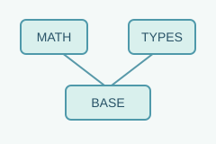
base数学类型、容器与公共工具
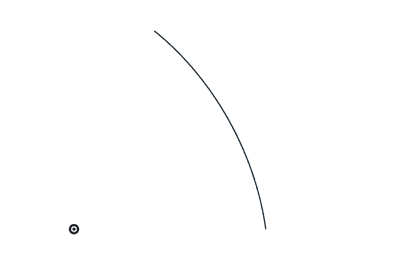
laws规律表达式与计算基础
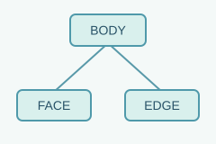
kernel实体结构、历史与模型管理
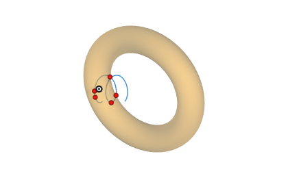
intersectors曲线 / 曲面之间的求交
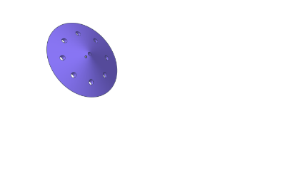
query点定位、包围盒与质量属性
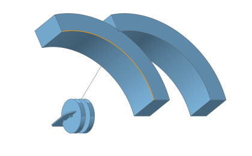
clearance几何对象间的距离计算
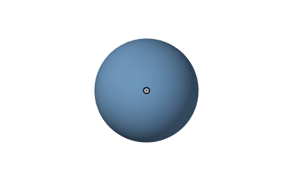
constructors从几何元素创建点、线、面、体
euler欧拉操作与拓扑关系维护
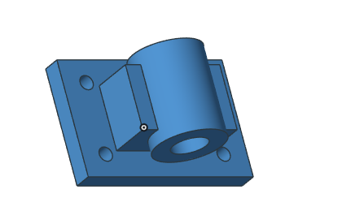
booleans并、交、差、切片与压印
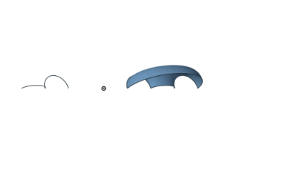
sweeping沿路径生成曲面与实体
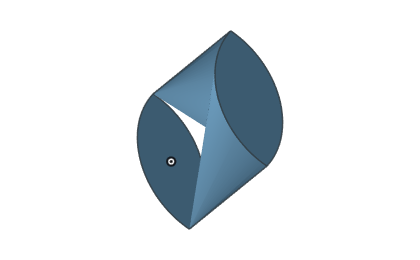
skinning由多个截面构造曲面
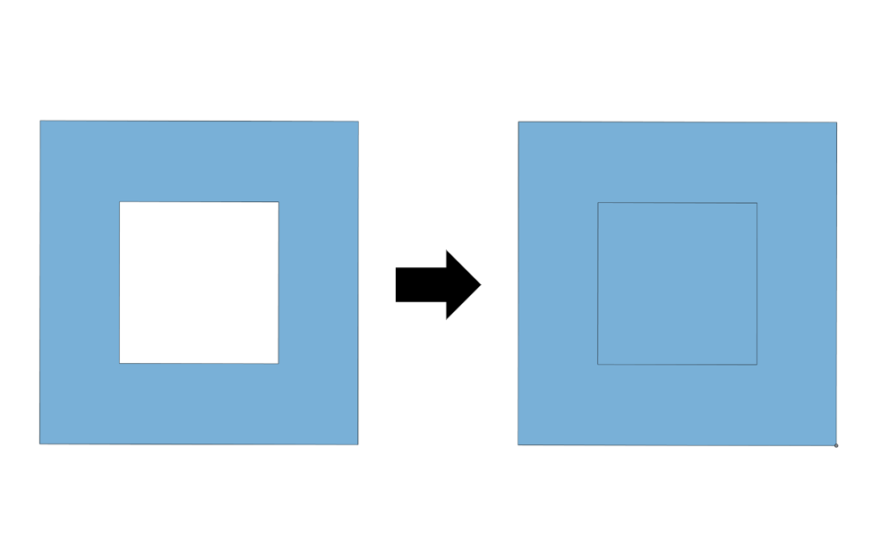
covering由封闭线框生成面
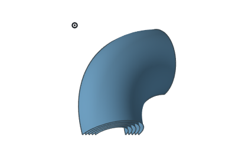
offsetting曲线、曲面与实体偏移
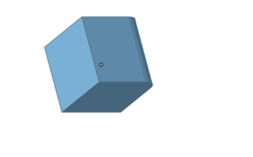
blending边界过渡与形状修整
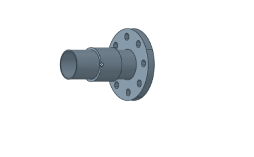
stitching连接片体及曲面边界
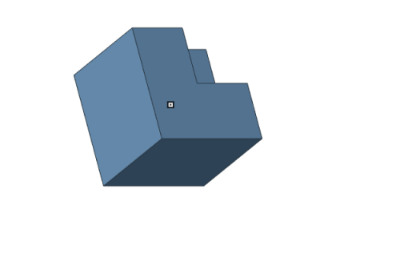
shelling面向薄壁模型的抽壳操作
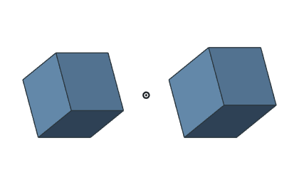
lop局部几何与拓扑修改
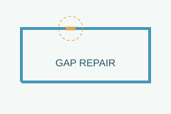
healing几何模型修复能力

faceter用于实体显示的网格剖分
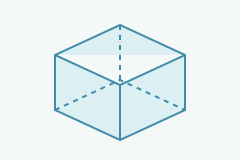
ihl视图中的可见边界计算
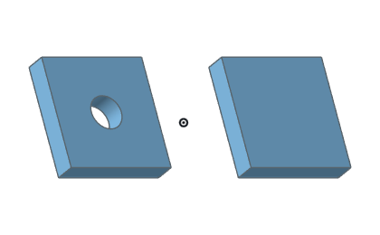
remove面移除及相关建模操作
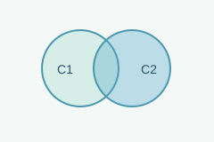
ct胞元拓扑结构与操作
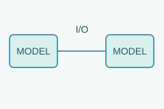
interop模型互操作与数据交换
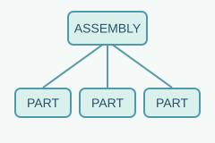
asm装配模型、组件与实体管理接口
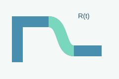
abl高级过渡、可变半径与截面相关接口
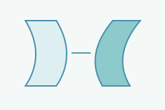
warping弯曲、扭转与基于 law 的空间映射接口
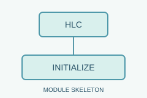
hlc当前为模块骨架，提供初始化接口
defeature模型简化；当前随 HUDONG 模式启用，依赖 DPS 适配层
dpsadaptor几何能力与数据适配；随 HUDONG 模式启用
acisadaptor连接 GME 与真实 ACIS 的类型、实体和 API，需相关依赖
未找到匹配模块，试试“曲面”“拓扑”或英文模块名。
当前展示 30 个模块，包括核心模块、适配层及条件启用模块。HLC 当前为模块骨架；defeature 与 dpsadaptor 随 HUDONG 模式启用。目录存在不代表全部接口已经实现，具体能力以对应版本与验证结果为准。
GME Studio 是基于 Qt6 的桌面建模与验证工具。通过命令面板操作真实内核实体，把接口调试、建模示例与可视化放在同一个工作流程中。
基本体、曲线、解析曲面与样条曲面。
布尔、拉伸、旋转、扫掠、偏置与圆角。
实体检查、显示控制、操作结果与日志。
按模块注册示例，运行案例并生成预览。
面向已取得仓库及相关依赖访问权限的开发者。公开源码入口、发布包与许可证正在筹备，当前步骤依据现有仓库结构整理。
CMake 3.27 及以上，以及支持 C++20 的编译器。Windows 可使用 Visual Studio 2022 / MSVC；Linux 可使用 Make 或 Ninja。
在仓库根目录初始化子模块。部分模块需要单独权限；按目标构建配置准备依赖和预编译模块库。
先完成默认构建，再按需要启用开发模块和测试。需要桌面交互时，再配置 Qt6 并开启 Studio。
# 初始化有权限访问的子模块 git submodule update --init --recursive # 配置工程 cmake -S . -B build # 构建 Release 配置 cmake --build build --config Release
-DCMAKE_BUILD_TYPE=Release；Studio 需额外配置 Qt6。遇到依赖错误时，请先核对仓库 README。配置时设置 -DDEVELOP_BOOLEANS=ON 等模块选项。该模块从源码构建，其余模块需要匹配 Debug / Release 的预编译库。测试范围通过相应 TEST 选项配置。
安装 Qt6 并按平台设置 Qt6_PATH，然后在配置时加入 -DBUILD_STUDIO=ON。Studio 的内核与适配层依赖应与主工程保持一致，详细要求以当前仓库说明为准。
以下为社区建设的建议推进方向。正式计划、里程碑与版本时间将在项目公告中确认。
梳理公开源码范围与许可证；完善构建说明、模块导航和最小示例，让开发者能判断项目是否适合自己的需求。
形成问题模板、案例提交规范和评审约定；开放适合新人的文档、测试和模块任务，推动第一次外部贡献。
围绕真实应用完善回归集，逐步建立模块维护机制、公开技术讨论与发布记录，让使用者也能成为建设者。
无论你关注算法研究、应用集成还是工程质量，都可以从一个具体问题开始。贡献不只是一段核心算法，也可以是一份清晰的复现案例。
围绕求交、布尔、曲面和拓扑操作完善实现，同时补充边界条件与回归验证。
提交最小模型、执行步骤和预期结果，让几何问题可复现、可讨论、可修复。
改进环境配置、接口说明与教程，帮助下一位开发者更快完成第一次构建。
带来 CAD、CAM、CAE 场景中的真实几何需求，共同明确接口、约束与验证标准。
整理模型、环境、复现步骤和预期行为，用一份结构化的问题描述开启技术交流。请仅提交有权共享的模型和数据。
公开仓库与讨论区将在开源计划确认后公布。参与意向可通过页尾表单或社区邮箱登记。
GME 的定位是三维几何建模引擎，提供几何与拓扑以及建模操作等底层能力。GME Studio 是用于建模、验证和展示的桌面工具。完整 CAD 产品还需要结合产品自身的交互、业务数据与应用工作流。
当前处于开源筹备阶段，此站尚未提供经过确认的公开发行包。正式版本、下载入口与发布说明会在准备完成后公布；已有仓库权限的开发者可参考上方构建步骤。
开源许可证与对外发布范围尚待正式确认。使用、分发和商业集成条件应以最终发布的 LICENSE 及第三方依赖说明为准，本页面不作授权承诺。
当前仓库以接口级兼容为开发方向，在 GME 命名空间下组织相关 API，并使用与 ACIS R35 对比的一致性测试。接口兼容不意味着所有行为、全部模块或所有模型都已达到完全一致，集成前仍需针对目标场景验证。
说明版本、系统、编译配置和涉及模块，提供尽可能小的模型、明确的调用顺序、预期与实际结果，并附上必要日志。优先去除与问题无关的模型细节，可使用上方反馈模板整理信息。
仓库包含一致性测试和性能基准工程，但本页未发布统一的性能数字或生产可用性保证。评估时应固定版本、硬件、数据与参数，并用自己的真实模型验证准确性、稳定性和耗时。
无论你希望试用几何内核、贡献代码，还是探索研究与应用合作，都可以在这里登记参与意向。